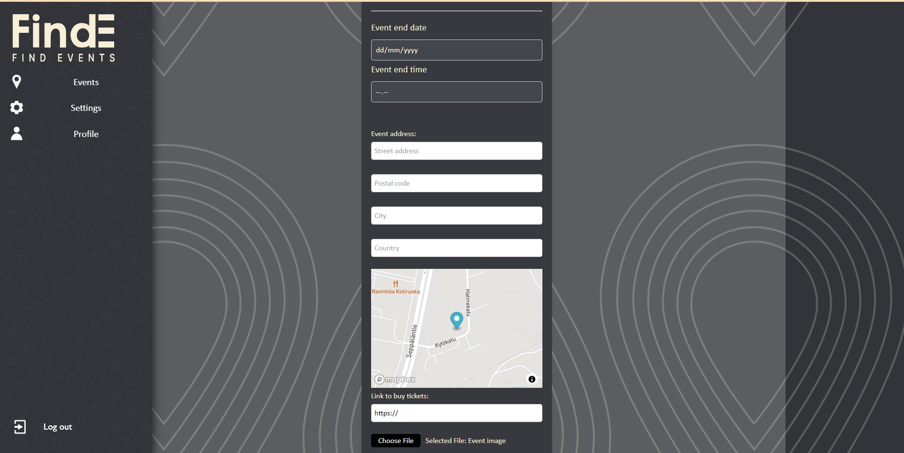

FindE
FindE on tapahtumanjärjestäjille ja tapahtumakävijöille tarkoitettu sovelluskokonaisuus, jonka avulla kuluttajat saavat tietoa lähellä olevista tapahtumista ja tapahtumanjärjestäjä saa tapahtumalleen näkyvyyttä.
FindE on sovelluskokonaisuus, jossa tapahtumanjärjestäjät ja potentiaaliset tapahtumien kuluttajat kohtaavat. Sovelluksen ajatuksena on tarjota tapahtumanjärjestäjille helppoa, nopeaa ja edullista mainostilaa. Potentiaalisille tapahtumien kuluttajille tarjotaan kiinnostavaa sisältöä sekä vaivaton työkalu erityisesti käyttäjän lähellä sijaitsevien tapahtumien tarkasteluun. Sovellus koostuu karttapohjaisesta mobiilisovelluksesta (peruskäyttäjä) sekä desktop-sovelluksesta (tapahtumien hallinnointi). Omana vastuualueenani oli desktop-sovelluksen toteuttaminen.
Tein projektin alkuvaiheessa samalla myös Frontend-perusteet -kurssin lopputyötä, joten koodaustunteja kertyi varsinkin alkuvaiheessa tolkuttomasti (projektin loppupuolella saimme irroitettua UI-tiimistä yhden jäsenen, jotta pystyin keskittymään asettelujen sijasta toiminnallisuuksiin). HTML, CSS, JavaScript ja Svelte tulivat hyvin tutuiksi. Pääsin opettelemaan API-kutsujen tekemistä, asynkronisuutta sekä Svelten storen käyttöä, jotka ovat tärkeitä hieman edistyneempiä web-kehityksen osa-alueita. Alun perin olisin halunnut saada opintojaksolta myös lisää AWS-osaamista, mutta roolijako ei tällä kertaa mahdollistanut sitä. Kaikki Tikon pilvikurssit on kuitenkin käytynä, joten pohja on jo olemassa.
Projektin aikana asioita tuli opittua paljon ns. kantapään kautta. Tässä muutama nosto:
- Perusteellinen suunnittelu säästää aikaa pitkässä juoksussa
- Asioita ei kannata tehdä käsin, jos ei ole pakko
- Koodi kannattaa kommentoida hyvin alusta asti eikä jälkikäteen
- Kaikkea ei tarvitse eikä voi osata. Tärkeämpää on pystyä määrittelemään ongelma ja tietää, mistä lähteä etsimään ratkaisua. Tässä auttaa kokonaisuuksien hahmottaminen
Entäpä työelämätavoitteet? Valitettavasti tämä opintojakso ei vieläkään tuonut tähän asiaan sataprosenttista selkeyttä. Ticorporate kuitenkin näytti sen, että teknisetkin roolit onnistuvat ja halu oppia on kova vaikka välillä intoa onkin enemmän kuin älyä. Projektityöskentely sujuu myös. Tarkoituksena on hankkia vielä Python- ja backend-osaamista ja vahva ehdokas opinnäytetyöhön on Git-opas tulevia Ticorporateja varten.
